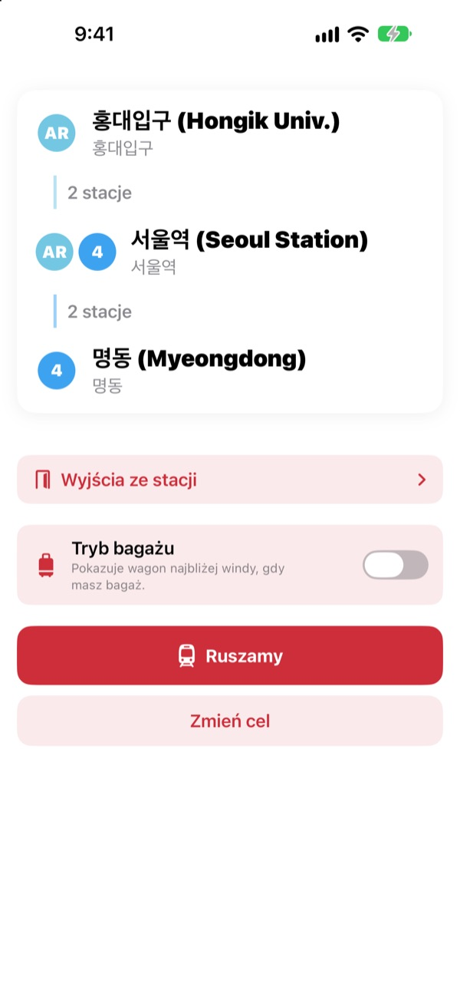
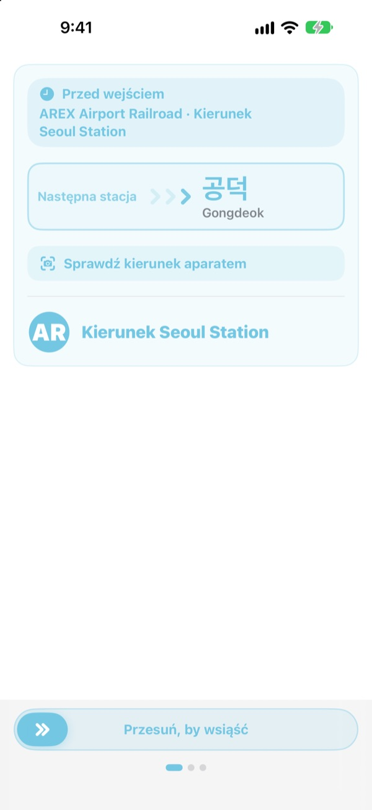
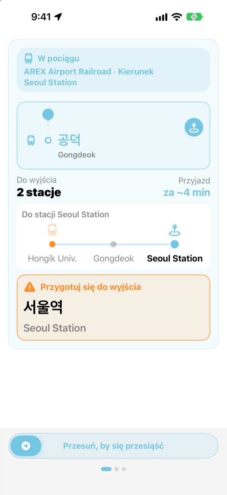
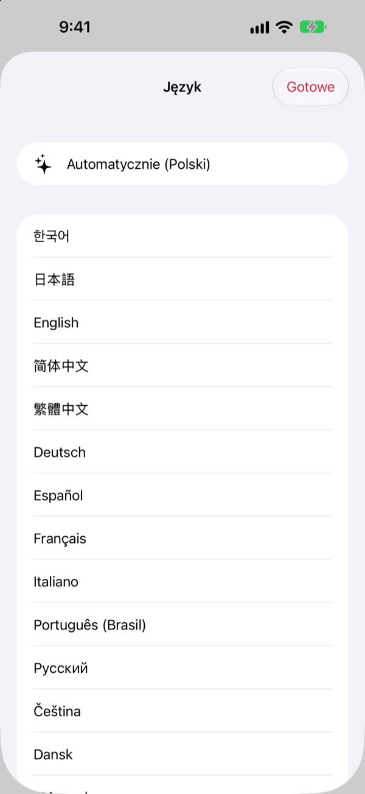

Właściwy peron.
Właściwa stacja.
Wybierz stację początkową i docelową, a KORA powie Ci, do którego pociągu wsiąść, dokładnie tak, jak napisano na tablicy na peronie. W czasie jazdy śledzi stacje i daje znać, kiedy wysiąść.
Wyszukiwanie trasy, kierunek pociągu i przyjazdy na żywo są za darmo.

Przejedź się na próbę
Jesteś na stacji Hongik Univ. na linii AREX. Wybierz, gdzie wysiadasz, i stuknij Ruszamy, a zobaczysz kierunek pociągu i powiadomienia o wysiadaniu tak jak w aplikacji.
Stałeś kiedyś na peronie, nie wiedząc, do którego pociągu wsiąść?
Aplikacje z mapami podają linię, a na peronie wiszą tylko tablice z nazwami stacji, których nigdy nie słyszałeś. Wsiądziesz w złą stronę i wracasz kilka stacji. Przegapisz komunikat i przejeżdżasz swoją. KORA nazywa Twój pociąg tak samo jak tablica i ostrzega przed Twoją stacją.
Tymi samymi słowami co tablica
Właściwy pociąg widzisz dokładnie tak, jak jego cel jest napisany na peronie i na samym pociągu. Masz wątpliwości? Skieruj aparat na tablicę na peronie lub tablicę kierunkową pociągu, a KORA od razu powie, czy to dobry kierunek.
Rozpoznawanie tekstu odbywa się w całości na Twoim iPhonie.

Nie przegapisz swojej stacji
KORA łączy przyjazdy na żywo, GPS, ruszanie i zatrzymywanie się pociągu oraz komunikaty w wagonie, żeby wiedzieć, gdzie jesteś. Przed Twoją stacją pojawi się „Przygotuj się do wyjścia”, a potem „Wysiądź teraz!”, z wibracją.
Postęp jazdy widać też na ekranie blokady i w Dynamic Island.

23 języki, koreańskie nazwy zostają
Całej aplikacji używasz w 23 językach, a startuje w języku Twojego iPhone’a. Nazwy stacji są pokazane w koreańskim oryginale obok zapisu łacińskiego z tablic, więc łatwo je odnaleźć na peronie.

Trzy kroki i jedziesz
- 1
Ustaw start
GPS znajdzie najbliższą stację albo wybierz ją sam.
- 2
Wybierz cel
Przesiadki, stacje i właściwy pociąg pojawią się od razu.
- 3
Stuknij Ruszamy
Ekran i wibracja powiedzą Ci, kiedy wysiąść.
Do czego służą uprawnienia
- Lokalizacja
- Znaleźć najbliższą stację
- Aparat
- Odczytać tablice na peronie i kierunkowe, aby sprawdzić kierunek
- Mikrofon i rozpoznawanie mowy
- Wyłapać z komunikatów nazwę stacji i stronę wyjścia
- Ruch i sprawność
- Wykryć ruszanie i postoje, by dokładniej znać obecną stację
Wszystkie uprawnienia są opcjonalne. Bez nich wybierasz stacje sam i nadal masz trasę oraz powiadomienia o wysiadaniu. Lokalizacja, aparat i komunikaty są przetwarzane na urządzeniu i nigdy nie są nagrywane, zapisywane ani wysyłane.
Szukanie drogi zawsze za darmo. Prowadzenie w trakcie jazdy to KORA Pro.
Za darmo
- Wyszukiwanie trasy i przesiadki
- Napis kierunku na właściwym pociągu
- Przyjazdy na żywo
- Sprawdzanie kierunku aparatem
- Obecna stacja i powiadomienie o wysiadaniu na ekranie
- Wszystkie funkcje Pro w pierwszych trzech podróżach
KORA Pro
- W każdej podróży: prowadzenie na ekranie blokady, rozpoznawanie komunikatów i wibracja przy wysiadaniu
- Wyjścia ze stacji: co jest przy każdym wyjściu na liniach 1–8 w Seulu
- Przypomnienie o ostatnim pociągu na liniach 1–9
- Tryb bagażu: wagon najbliżej windy na liniach 1–8
Płacisz raz i masz na zawsze. To nie subskrypcja.
Gdy darmowe podróże się skończą, nadal możesz jeździć. Postęp na ekranie zostaje, wstrzymują się tylko ekran blokady, rozpoznawanie komunikatów i wibracja.
Pytania
Aplikacja nie znajduje mojej stacji albo pokazuje inną.
Wejdź w Ustawienia > Prywatność i ochrona > Usługi lokalizacji > KORA, wybierz „Podczas używania aplikacji” i włącz „Dokładna lokalizacja”. Pod ziemią i w dużych budynkach GPS bywa niedokładny: stuknij kartę obecnej stacji u góry i wybierz ją sam. Wszystko działa też bez dostępu do lokalizacji.
Jak działa sprawdzanie aparatem?
Gdy trasa jest na ekranie, otwórz sprawdzanie aparatem i wypełnij kadr tablicą na peronie lub tablicą kierunkową pociągu. Najlepiej działa z koreańskim tekstem. Jeśli tablica jest ciemna, daleko albo mocno pod kątem, podejdź bliżej i celuj na wprost. Wynik to pomoc, w razie wątpliwości sprawdź też oznaczenia na stacji.
Nie widać przyjazdów na żywo.
Dane pochodzą z Seoul Open Data Plaza, wymagają internetu i są dostępne głównie dla linii w aglomeracji Seulu. Bez sieci lub danych KORA automatycznie przechodzi na szacowanie z rozkładu, GPS i akcelerometru i dalej Cię prowadzi. Wyszukiwanie trasy działa offline.
Powiadomienie o wysiadaniu przyszło trochę za wcześnie lub za późno.
Pod ziemią GPS jest słaby i obecna stacja może się spóźniać. Jeśli zezwolisz na mikrofon, KORA poprawi pozycję na podstawie komunikatów w pociągu. Powiadomienia to pomoc, słuchaj też komunikatów i patrz na tablice.
Jak zmienić język?
KORA startuje w języku Twojego iPhone’a. Przytrzymaj kartę stacji na ekranie głównym (obecnej lub docelowej), a otworzy się wybór spośród 23 języków.
Na ekranie blokady nie ma aktywności na żywo.
Sprawdź w Ustawienia > Aplikacje > KORA (w starszym iOS Ustawienia > KORA), czy aktywności na żywo są włączone. Pojawia się po rozpoczęciu prowadzenia w podróży i kończy, gdy całkiem zamkniesz aplikację. Dynamic Island jest tylko w modelach iPhone’a, które ją mają.
Które miasta są obsługiwane?
Około 930 stacji w aglomeracji Seulu (Seul, Gyeonggi i Incheon, w tym GTX-A, AREX, linia Shinbundang i kolej lekka), w Busanie, Daegu, Gwangju i Daejeon. Miasto zmienisz etykietami regionów u góry wyboru stacji.
Czy mogę wypróbować aplikację przed podróżą?
Tak. Wybierz sam start i cel, a trasy, przesiadki i kierunek pociągu zobaczysz z dowolnego miejsca na świecie.
Czy KORA Pro to subskrypcja?
Nie. To jednorazowy zakup, który zostaje z Tobą i działa z Chmurą rodzinną. Po ponownej instalacji stuknij Przywróć zakup na ekranie Pro.
Co dzieje się z moimi danymi?
Bez konta i bez reklam. Lokalizacja, aparat i rozpoznawanie komunikatów są przetwarzane na urządzeniu i nigdy nie są zapisywane ani wysyłane. Zbieramy tylko anonimowe statystyki użycia, żeby ulepszać aplikację.
Czy aplikacja jest dostępna?
KORA obsługuje VoiceOver i większy tekst. Pomysły na lepszą dostępność są zawsze mile widziane.
Brakuje stacji, nazwa wygląda dziwnie albo masz inne pytanie? Napisz na mizzking75@gmail.com. Podaj wersję aplikacji, model iPhone’a i stacje, z których korzystałeś, a sprawdzimy to szybciej.